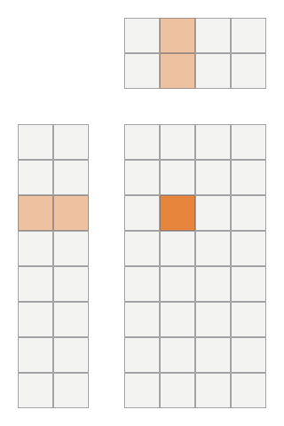

Chapter 2
Many Points at Once
Our network computes point by point so far. In this chapter we write the same computation for all points at once, with matrices, and see how Scaly holds the many numbers and computes with them fast.
A Row for Each Point
A neuron forms its weighted sum for one point, . For the 200 training points of the circle those are 200 sums, and a layer of four neurons forms 800. Writing the inputs of all points one below the other, a row for each point, gives a table of 200 rows and 2 columns, a matrix . The layer's weights we write as a matrix too, a column for each neuron, so 2 rows and 4 columns.
The sum of neuron for point is then row of with column of , multiplied number by number and added up, plus the neuron's bias:

All these sums together are a matrix again, , a row for each point and a column for each neuron. The computation that forms it from and is called the matrix product and is written like a multiplication:
The bias is added to every row, and tanh acts on each number by itself. Every further layer is the same line again, with instead of as its input. The whole forward computation of our network is three such lines.
What do we gain by this? The computation is exactly the same: the same multiplications and additions in the same order, and the program of this chapter arrives number for number at the field's result. Gained are three things. The program becomes clearer: the forward computation is three lines, and the number of points no longer appears in them. The matrix product is the one computation processors and graphics cards are built for; large matrices spread well over the cores and onto the card. With our 200 points and four neurons none of this shows yet, the matrices are tiny. And it prepares the next chapter: a program that forms derivatives by itself then needs a rule for a handful of matrix operations instead of for every single multiplication.